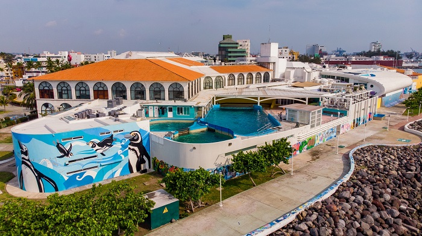
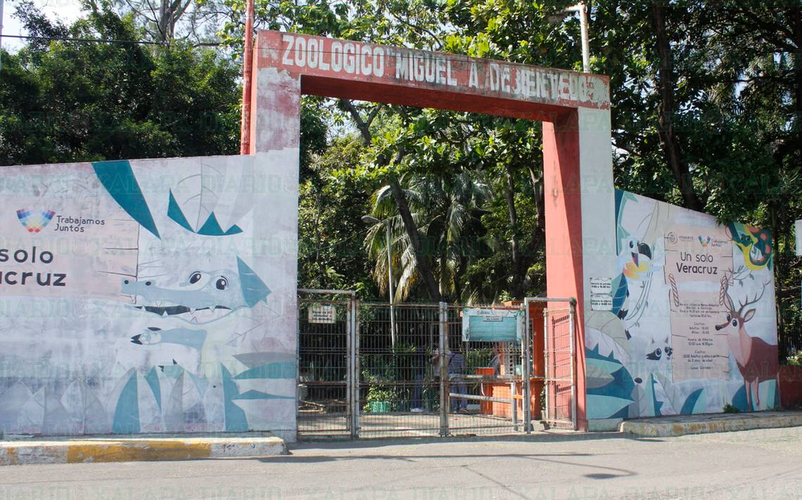
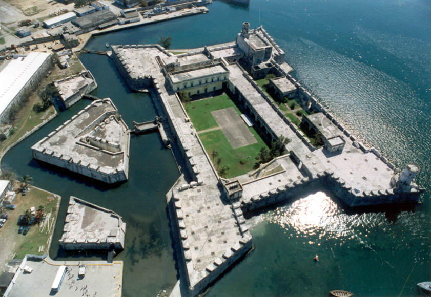
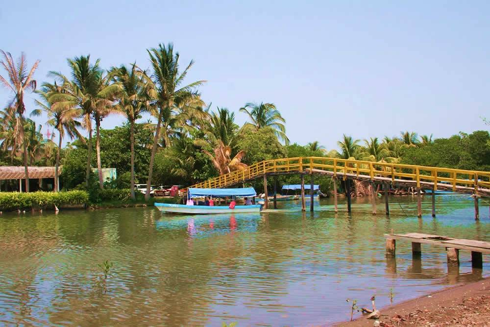
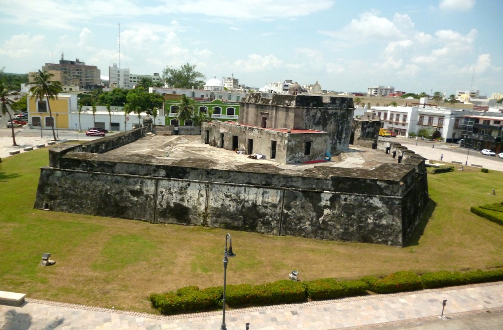
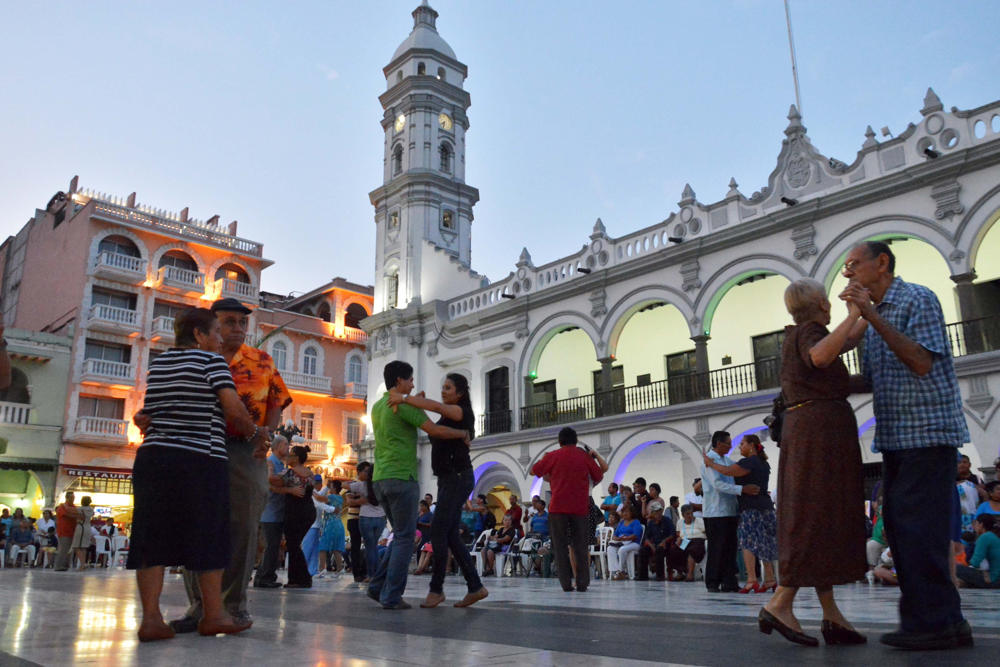
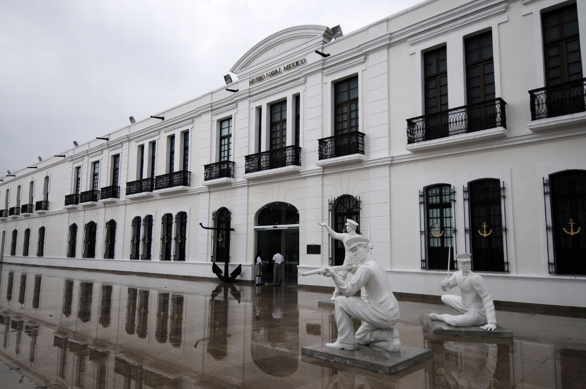
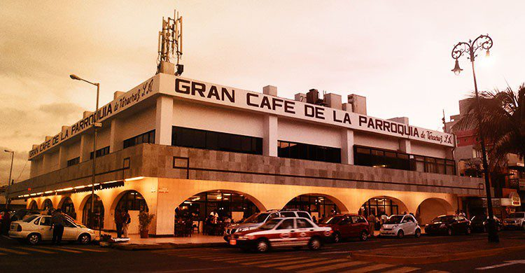
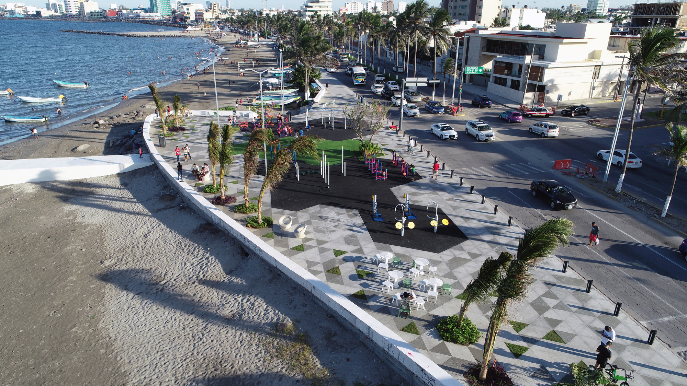
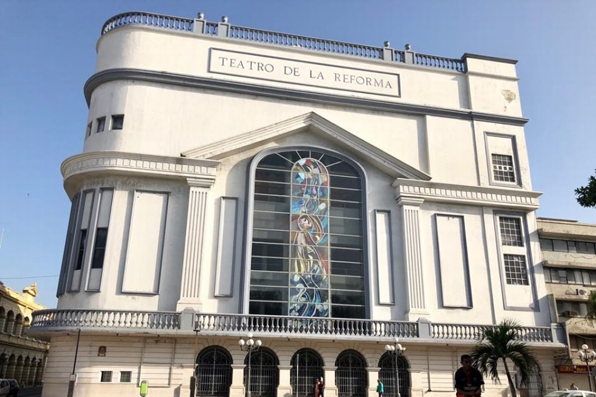

TurisVer
Inicio
Lugares
Contacto
Encuentra un lugar
Todos
Parques
Museos
Entretenimiento
Restaurantes
Tour

Acuario

Viveros Veracruz

San Juan de Ulua

Laguna Mandinga

Baluarte de Santiago

Zocalo de Veracruz

Museo Naval

Cafe de la parroquia

Boulevard

Teatro Reforma
Suscribete
Conoce promociones o noticias de atracciones de temporada suscribiendote a nuestro boletin